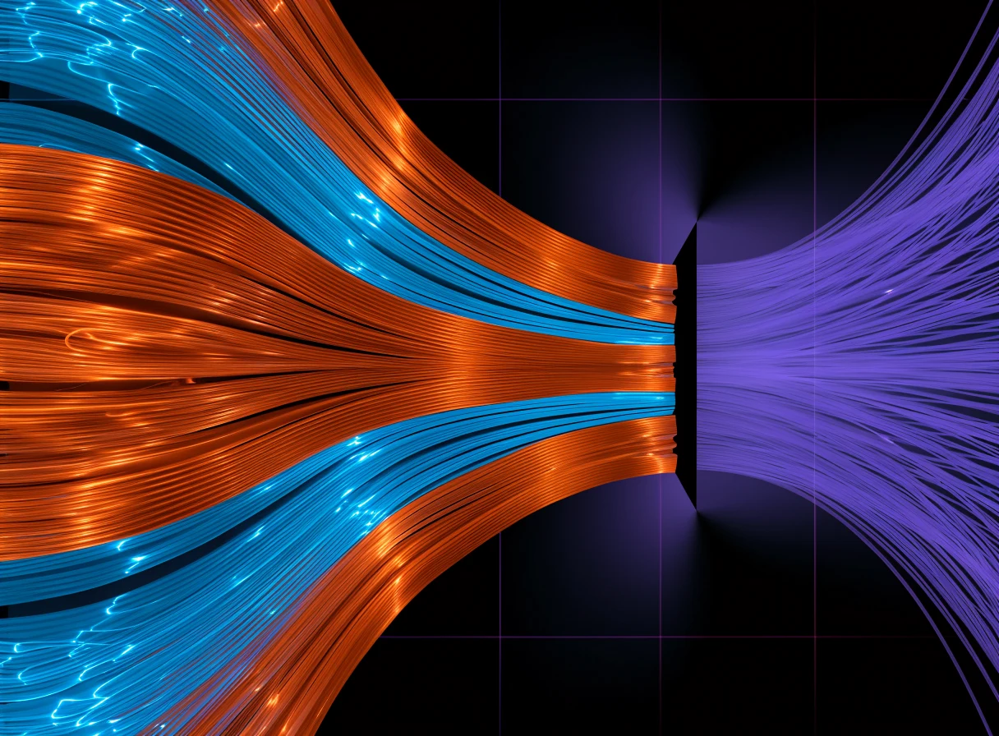

Mission Critical follows critical minerals from the pit to the finished product, along with the politics and money that move them, every week.
Subscribing opens the Mission Critical page on Beehiiv to confirm.Copper, lithium, graphite, gallium, germanium and rare earths: the metals inside data centres, power grids and chips, and where supply is tight.


Export controls, tariffs, quotas and price floors. Who holds the valves along the chain, and what changes when they turn them.
Each issue lands on Wednesday morning, Perth time. Short, sourced, and written for people who need to know what is moving in the chain.
SubscribeRead issue 2